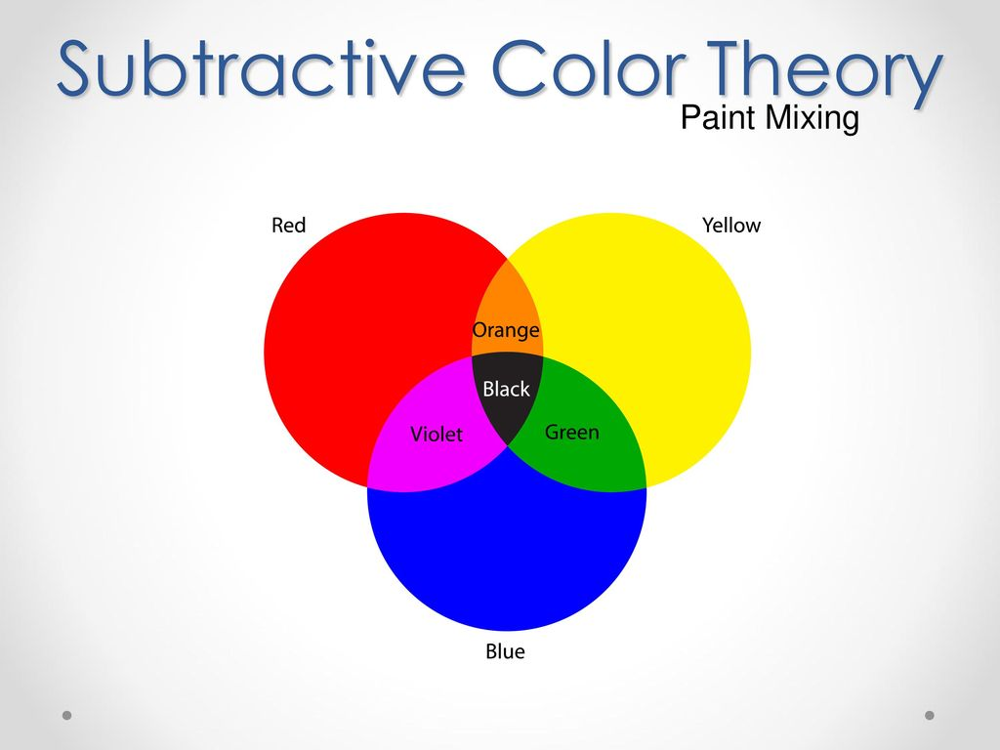
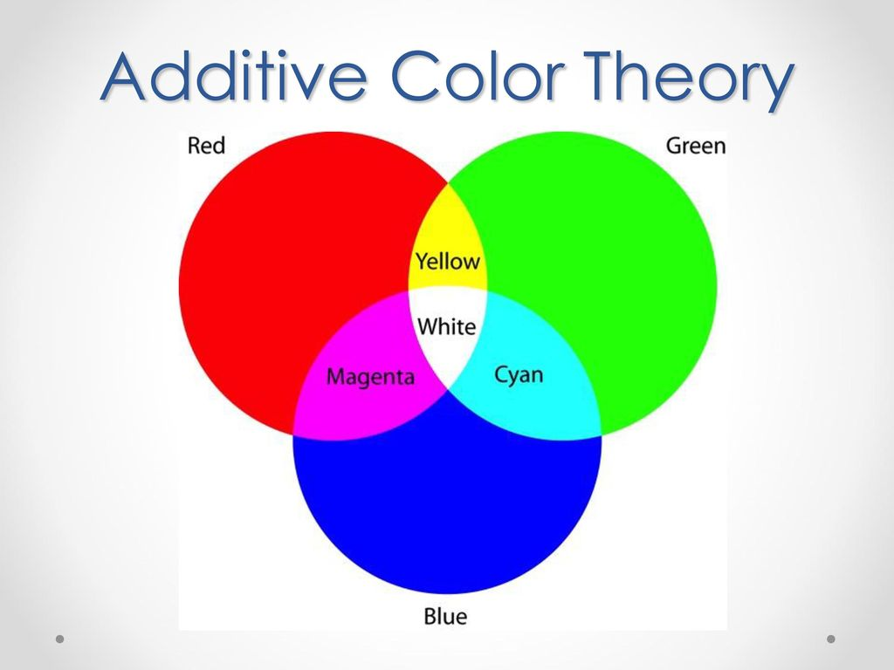

Generative Art with p5.js
An introductory course
What is p5.js?
- Based off Processing, a Java library
- Runs entirely in client-side Javascript
- Can be extended
- Can be combined with other Javascript tools / libraries
What is art?
Abstract vs FigurativeTools
- lines
- curves
- shapes
- colors
Techniques
- Tiling
- Displacement
- Recursion
Hand drawn exercise
Choose 6 different ways to fill in a square. Roll a die and fill in a 10 x 10 grid with the corresponding shape.
Development Environment
https://editor.p5js.org

Create an account on editor.p5js.org in order to save your work.
Click the pencil icon to give your sketch a meaningful name.
Additional options: openprocessing.org, download from p5js.org and run locally / edit it in the text editor of your choice.
The draw() loop
let yPos = 0;
function setup() {
// setup() runs once
frameRate(30);
}
function draw() {
// draw() loops forever
background(204);
yPos = yPos - 1;
if (yPos < 0) {
yPos = height;
}
line(0, yPos, width, yPos);
}
function setup() {
createCanvas(400, 400);
noLoop();
}
function draw() {
let bg_r = random(0,255);
let bg_g = random(0,255);
let bg_b = random(0,255);
background(bg_r, bg_g, bg_b );
}
function mousePressed(){
redraw();
}
The coordinate plane

Points, Lines, and Circles
point(x, y);
line(x1, y1, x2, y2);
circle(x, y, diameter);
strokeWeight(weight);
Draw a stick figure using points, lines, and circles
Color Basics
demo
Single integer, series of 3-4 integers, hex value string, color description string
fill('#ffcc00')
stroke(255,100,00)
Moving things around - transformations
Translate
move left, right, up down docs
Rotate
turn around the origin point
angleMode(DEGREES) docs
Scale
make it bigger or larger docs
ShearX / ShearY
docsMore shapes
Rectangle - Optional Roundness
rectMode() - CORNER, CORNERS, CENTER, or RADIUS
Arc - Chord, Pie, Open
Ellipse - A circle, but lopsided!
ellipseMode() - CENTER, RADIUS, CORNER, CORNERS
Polygons
beginShape();
vertex(30, 20);
vertex(85, 20);
vertex(85, 75);
vertex(30, 75);
endShape(CLOSE);
Working with Numbers
random()
random() - a floating point number between 0 and 1
random(i) - a floating point number between 0 and i
random(i,j) - a floating point number between i and j
random([a, b, c]) - a, b, or c (randomly)
int() ceil() floor() width height displayWidth displayHeightCreate random geometry
Create a canvas and divide it into a grid of rows and columns. Randomly divide each box in whatever way you choose, creating a grid pattern.
Break!
Interactivity
Click on any wedge
Functions
mousePressed(), mouseDragged(), mouseClicked()
keyPressed(), keyReleased()
Variables
mouseX, mouseY
keyCode
CreateSelect(),
CreateRadio(),
CreateSlider()
Color Theory
Subtractive Color
Additive Color
RGB, HSL, and HSB
RGB Color Mixing: demoHSB vs HSL
Color relativity


Working with Color
or: how to avoid clown barf- Use predefined color palettes
- lerpColor()
Beyond canvas(): P5Graphics
off-screen graphics buffer, can be used for "layering" images
Creating Textures
Imported textureOn the fly texture
Fake shadows, HTML5 shadows
Fake Shadows
HTML5 Shadows
HTML5 CanvasRenderingContext2D
docsRendering images for print and web
- Decide on a target resoltuion for print
- use createGraphics() to generate work at that resolution
- use image() to scale and display the work
Bringing in other libraries, APIs
- jQuery, etc
- Color scheme APIs